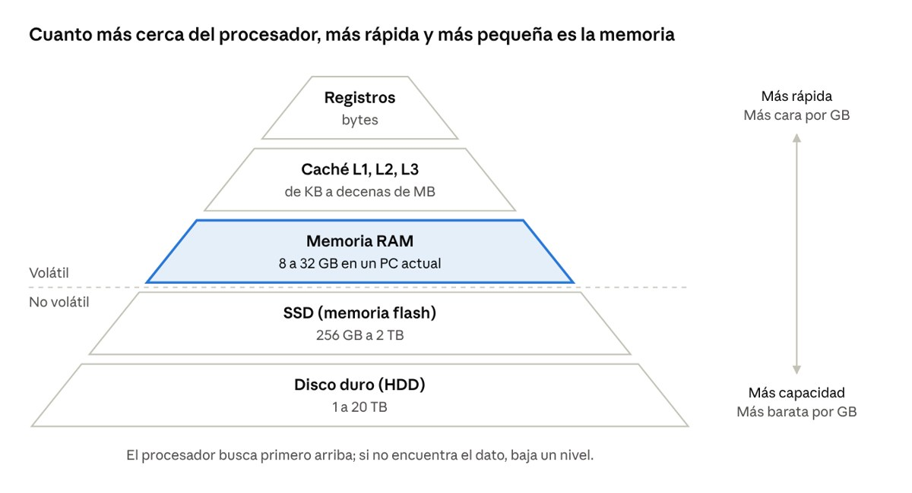

Inicio / Montaje y mantenimiento de sistemas y componentes informáticos / Tema 3
Material didáctico · Tema 3La memoria del ordenador
Descargar la presentación (PowerPoint, 6 MB)
1. ¿Qué es la memoria?
La memoria es la parte del ordenador que guarda los datos y los programas para que el procesador (CPU) pueda trabajar con ellos. Sin memoria, el procesador no tendría nada que hacer: no sabría qué instrucciones seguir ni con qué datos operar.
Una forma fácil de entenderlo es pensar en un taller o en tu escritorio de estudio:
- El procesador eres tú, la persona que trabaja.
- La memoria RAM es la mesa de trabajo: pones encima lo que estás usando ahora mismo. Es rápida de alcanzar, pero tiene un tamaño limitado y, al terminar la jornada (apagar el ordenador), se recoge todo.
- El almacenamiento (SSD o disco duro) es el armario: guarda muchas cosas durante mucho tiempo, aunque sacarlas cuesta más.
Cuando abres un programa, por ejemplo un procesador de textos, el ordenador copia ese programa desde el SSD a la RAM. Desde la RAM, el procesador lo lee muy deprisa. Por eso, si tienes poca RAM y muchas cosas abiertas, el equipo se vuelve lento: la mesa está llena y hay que ir al armario una y otra vez.
En este tema estudiaremos qué tipos de memoria hay, cómo se mide, cómo son los módulos de RAM actuales (DDR4 y DDR5), cómo se instalan y cómo se comprueba que funcionan. Corresponde a la UD 4, Componentes internos de un ordenador, y a los resultados de aprendizaje RA1 y RA2 del módulo.
2. ¿Cómo se mide la memoria?
El ordenador solo entiende dos estados: hay corriente o no hay corriente, que representamos con 1 y 0. Cada uno de esos ceros o unos es un bit, la unidad más pequeña de información. Un grupo de 8 bits forma un byte, que es más o menos lo que ocupa una letra.
| Unidad | Símbolo | Equivale a | Ejemplo para hacerse una idea |
|---|---|---|---|
| Bit | b | 0 o 1 | Un interruptor encendido o apagado |
| Byte | B | 8 bits | Una letra, como la «A» |
| Kilobyte | KB | 1.000 bytes | Un correo electrónico corto de texto |
| Megabyte | MB | 1.000 KB | Una foto del móvil (3-5 MB) o una canción MP3 (4 MB) |
| Gigabyte | GB | 1.000 MB | Una película en HD (2-4 GB); la RAM de un PC (8-32 GB) |
| Terabyte | TB | 1.000 GB | Un SSD o disco duro actual (1-2 TB) |
Ojo con la «b» minúscula y la «B» mayúscula. 100 Mb (megabits) no es lo mismo que 100 MB (megabytes). Las velocidades de Internet se dan en megabits por segundo (Mbps), y los tamaños de archivo en megabytes.
¿Por qué mi disco de 1 TB marca 931 GB? Los fabricantes cuentan de 1.000 en 1.000, pero Windows cuenta de 1.024 en 1.024 (porque el ordenador trabaja en base 2). Por eso un disco de 1 TB aparece en Windows como unos 931 GB. No falta espacio: es la misma cantidad contada de otra forma. Con la RAM pasa al revés: los módulos siempre tienen tamaños en potencias de 2 o cercanos (8, 16, 32 GB).
Cuando hablamos de memoria RAM, lo normal hoy es medir en gigabytes (GB). El libro de 2012 decía «megabytes o gigabytes», pero actualmente ningún ordenador nuevo trae menos de 8 GB.
3. Tipos de memoria
En un ordenador hay varias memorias, cada una con una tarea. La primera gran diferencia es si la memoria es volátil (pierde los datos al apagar) o no volátil (los conserva sin corriente).
| Memoria | ¿Volátil? | Dónde está | Para qué sirve |
|---|---|---|---|
| Registros | Sí | Dentro del procesador | Guardan el dato con el que la CPU está operando en ese instante |
| Caché (L1, L2, L3) | Sí | Dentro del procesador | Copia de los datos que la CPU va a usar enseguida. Muy rápida y pequeña (de KB a decenas de MB) |
| RAM (memoria principal) | Sí | Módulos en la placa base (o soldada en portátiles) | Programas y datos en uso. Es la «mesa de trabajo» |
| Memoria de vídeo (VRAM, GDDR6/GDDR7) | Sí | En la tarjeta gráfica | Imágenes que se van a mostrar en pantalla. Si la gráfica es integrada, usa parte de la RAM |
| ROM / memoria flash del firmware | No | Chip en la placa base | Guarda la BIOS/UEFI, el programa que arranca el equipo |
| Almacenamiento (SSD, disco duro) | No | Unidades conectadas a la placa | Sistema operativo, programas y archivos de forma permanente |
RAM y ROM
RAM significa Random Access Memory (memoria de acceso aleatorio). Se puede leer y escribir muy rápido, pero es volátil. Por eso, si se va la luz sin haber guardado, se pierde el trabajo.
ROM significa Read Only Memory (memoria de solo lectura). Antes se grababa en fábrica y no se podía cambiar. Hoy el firmware de la placa (BIOS o, en los equipos actuales, UEFI) está en una memoria flash que sí se puede actualizar cuando el fabricante publica una versión nueva.
¿Y la pila de la placa base? El libro habla de la memoria CMOS, que guardaba la configuración gracias a la pila. En las placas actuales la configuración suele guardarse en la propia memoria flash, y la pila (normalmente una CR2032) mantiene sobre todo el reloj (fecha y hora). Si un equipo pierde la hora cada vez que se desenchufa, lo más probable es que haya que cambiar la pila.
SRAM y DRAM
Hay dos tecnologías de RAM:
- SRAM (RAM estática): muy rápida, pero cara y ocupa mucho. Se usa en la memoria caché del procesador.
- DRAM (RAM dinámica): más barata y con más capacidad. Necesita «refrescarse» (recargarse) miles de veces por segundo. Es la que se usa como memoria principal. Todas las DDR que veremos son DRAM.
La jerarquía de memoria
Las memorias se ordenan como una pirámide: cuanto más cerca del procesador, más rápidas, más caras y más pequeñas. Cuanto más lejos, más lentas, más baratas y con más capacidad. El procesador siempre busca primero en la caché; si no lo encuentra, va a la RAM; y si tampoco está allí, al SSD o disco.

4. La memoria RAM
La RAM viene en módulos: pequeñas placas de circuito con varios chips de memoria y una fila de contactos dorados que se insertan en las ranuras de memoria de la placa base.
Formatos de módulo
- DIMM: el módulo largo (unos 13,3 cm) de los ordenadores de sobremesa.
- SO-DIMM: versión corta (unos 7 cm) para portátiles y miniPC.
- Memoria soldada (LPDDR4X, LPDDR5X): muchos portátiles finos, tablets y móviles llevan la RAM soldada a la placa. No se puede ampliar ni cambiar, así que hay que elegir bien la cantidad al comprar.
- CAMM2: formato nuevo y plano para portátiles que empieza a verse desde 2024. De momento es poco común.
Los formatos antiguos SIMM, FB-DIMM o Micro-DIMM que aparecen en el libro ya no se usan en equipos actuales.
Generaciones: DDR3, DDR4 y DDR5
Toda la RAM actual es DDR SDRAM (Double Data Rate): transfiere datos dos veces en cada ciclo de reloj. Cada generación es más rápida, gasta menos energía y admite módulos de más capacidad.
| DDR3 | DDR4 | DDR5 | |
|---|---|---|---|
| Año de llegada a los PC | 2007 | 2014 | 2021 |
| Contactos DIMM (sobremesa) | 240 | 288 | 288 |
| Contactos SO-DIMM (portátil) | 204 | 260 | 262 |
| Voltaje | 1,5 V (1,35 V en DDR3L) | 1,2 V | 1,1 V |
| Velocidades típicas | 1.333 a 1.866 MT/s | 2.133 a 3.200 MT/s | 4.800 a 8.000 MT/s |
| Capacidad típica por módulo | 2 a 8 GB | 4 a 32 GB | 8 a 64 GB |
| Dónde la encontrarás | Equipos de 2008 a 2015 aprox. | Muchos equipos de oficina actuales | Equipos nuevos (Intel desde 12.ª gen., AMD AM5) |
Las generaciones no son compatibles entre sí. Cada una tiene la muesca (la ranura en la fila de contactos) en una posición distinta, para que sea físicamente imposible meter una DDR4 en una ranura DDR5 o al revés. Aunque DDR4 y DDR5 tengan los mismos 288 contactos, no encajan. La placa base decide qué tipo admite: hay que mirar siempre su manual.
Novedades de la DDR5 que conviene conocer: lleva su propio chip de alimentación (PMIC) en el módulo, divide cada módulo en dos subcanales para trabajar más rápido e incluye una corrección de errores interna (on-die ECC). Las DDR y DDR2 que menciona el libro son ya historia.
Características que hay que saber leer
- Capacidad: cuántos GB tiene el módulo o el kit. Es lo que más se nota en el día a día.
- Velocidad: se mide en MT/s (millones de transferencias por segundo). Las tiendas a menudo ponen «MHz», pero se refieren a lo mismo: «DDR5-5600» o «5600 MHz» significa 5.600 MT/s.
- Ancho de banda: cantidad de datos por segundo. Se calcula multiplicando la velocidad por 8 (porque el bus de memoria es de 64 bits = 8 bytes). De ahí salen nombres como PC4-25600 (DDR4-3200) o PC5-44800 (DDR5-5600).
- Latencia (CL): el tiempo de espera, en ciclos de reloj, desde que se piden los datos hasta que llegan. Cuanto más bajo, mejor, pero solo se puede comparar entre memorias de la misma velocidad.
- Doble canal (dual channel): con dos módulos iguales en las ranuras correctas, la CPU accede a los dos a la vez y casi duplica el ancho de banda. Por eso es mejor 2 × 8 GB que 1 × 16 GB.
- Perfiles XMP (Intel) o EXPO (AMD): la memoria arranca a una velocidad «de serie» más baja. Para que funcione a la velocidad anunciada hay que activar este perfil en la BIOS/UEFI.
- ECC y módulos registrados (RDIMM): detectan y corrigen errores. Se usan en servidores, no en ordenadores de oficina.
Para saber más, estas son las dos fórmulas (con el ejemplo de una DDR4-3200 CL16):
Ancho de banda (MB/s) = MT/s × 8 = 3.200 × 8 = 25.600 MB/s
Latencia real (ns) = CL × 2.000 ÷ MT/s = 16 × 2.000 ÷ 3.200 = 10 ns
Una DDR5-6000 CL30 da también unos 10 ns: el CL es más alto, pero como va más rápida, la espera real es parecida y transfiere muchos más datos.
Cómo leer la ficha de una memoria
Ejemplo de lo que puedes encontrar en una tienda: «Kit 32 GB (2 × 16 GB) DDR5-6000 CL30, 1,35 V, XMP/EXPO, DIMM».
| Dato | Qué significa |
|---|---|
| Kit 32 GB (2 × 16 GB) | Dos módulos de 16 GB, pensados para doble canal |
| DDR5 | Generación. La placa debe tener ranuras DDR5 |
| 6000 | Velocidad: 6.000 MT/s (con el perfil XMP/EXPO activado) |
| CL30 | Latencia de 30 ciclos |
| 1,35 V | Voltaje con el perfil activado (sin él funciona a 1,1 V) |
| DIMM | Formato de sobremesa (para portátil buscaríamos SO-DIMM) |
¿Cuánta RAM necesita un equipo?
| Uso del equipo | RAM recomendada (2026) |
|---|---|
| Mínimo para Windows 11 | 4 GB (en la práctica, se queda corto) |
| Ofimática e Internet (puesto de oficina) | 8 GB mínimo, 16 GB recomendable |
| Muchas pestañas, videollamadas, multitarea | 16 GB |
| Juegos, edición de vídeo o fotos | 32 GB o más |
Estas cifras son orientativas y cambian con los años: los programas piden cada vez más memoria.
5. La latencia de la memoria
La latencia es el tiempo de espera desde que el procesador pide un dato hasta que empieza a recibirlo. Piensa en una cafetería: la latencia es lo que tardan en servirte el primer café, y el ancho de banda es cuántos cafés pueden servir por minuto. Una buena memoria tiene latencia baja y ancho de banda alto.
| Latencia | Ancho de banda | |
|---|---|---|
| Qué mide | Cuánto se tarda en empezar a recibir datos | Cuántos datos llegan por segundo |
| Unidad | ns (o ciclos de reloj) | MB/s o GB/s |
| ¿Mejor? | Cuanto más baja | Cuanto más alto |
Tipo 1: la latencia según el nivel de memoria
Cada nivel de la jerarquía de memoria tarda un tiempo distinto en responder. La última columna convierte cada nanosegundo en un segundo para que se vea mejor la diferencia:
| Memoria | Latencia aproximada | Si 1 ns fuera 1 segundo... |
|---|---|---|
| Caché L1 | 1 ns | 1 segundo |
| Caché L2 | 3-5 ns | unos 4 segundos |
| Caché L3 | 10-15 ns | unos 12 segundos |
| RAM | 60-100 ns | 1-2 minutos |
| SSD NVMe | 20-100 µs | medio día |
| Disco duro | 5-10 ms | 3 meses |
Por eso el procesador busca primero en la caché. A esa escala, ir a la RAM es esperar un minuto, e ir al disco duro, meses. Son valores típicos redondeados, no medidas exactas.
Tipo 2: los tiempos de la RAM (timings)
En la etiqueta o en la ficha de una memoria aparecen cuatro números, por ejemplo 16-18-18-38. Son esperas medidas en ciclos de reloj. Para entenderlos, imagina la RAM como una hoja de cálculo enorme, con filas y columnas:
- CL (CAS Latency): ciclos desde que se pide una columna hasta que sale el dato. Es el más importante y el que más se anuncia.
- tRCD (RAS to CAS Delay): ciclos para «abrir» una fila antes de poder leer sus columnas.
- tRP (RAS Precharge): ciclos para «cerrar» una fila y poder abrir otra.
- tRAS: tiempo mínimo que una fila debe estar abierta.
Es como usar un archivador: abres un cajón (tRCD), buscas la carpeta dentro (CL), lo cierras para abrir otro (tRP) y no puedes cerrarlo nada más abrirlo (tRAS). Si dos memorias tienen la misma velocidad, cuanto más bajos sean estos números, mejor.
Latencia real en nanosegundos
Los ciclos no sirven para comparar memorias de distinta velocidad. Para compararlas hay que pasar el CL a nanosegundos:
Latencia real (ns) = CL × 2.000 ÷ MT/s
| Memoria | CL | Latencia real |
|---|---|---|
| DDR3-1600 | 11 | 13,75 ns |
| DDR4-3200 | 16 | 10 ns |
| DDR4-3200 | 22 | 13,75 ns |
| DDR5-4800 | 40 | 16,67 ns |
| DDR5-6000 | 30 | 10 ns |
Ojo: esta fórmula solo mide el CL. Una lectura completa desde el procesador tarda bastante más, los 60-100 ns de la tabla del Tipo 1.
¿Por qué la DDR5 es más rápida si su latencia (CL) es más alta?
1. Sus ciclos son más cortos. El CL se cuenta en ciclos de reloj, y en la DDR5 cada ciclo dura mucho menos. Una cosa compensa la otra:
| Memoria | Reloj real | Duración de un ciclo | CL | Espera real |
|---|---|---|---|---|
| DDR4-3200 | 1.600 MHz | 0,625 ns | 16 ciclos | 16 × 0,625 = 10 ns |
| DDR5-6000 | 3.000 MHz | 0,333 ns | 30 ciclos | 30 × 0,333 = 10 ns |
La DDR5 cuenta casi el doble de ciclos, pero cada uno dura casi la mitad. Por eso la espera real es la misma. Un CL más alto no significa esperar más.
2. Cuando los datos empiezan a llegar, llegan mucho más deprisa. La latencia es solo la espera inicial. Después, lo que cuenta es el ancho de banda:
- DDR4-3200: 3.200 × 8 = 25.600 MB/s por canal.
- DDR5-6000: 6.000 × 8 = 48.000 MB/s por canal, casi el doble.
Volviendo a la cafetería: con la DDR5 tardan lo mismo en servirte el primer café, pero luego sirven casi el doble de cafés por minuto.
3. Casi todo el trabajo del ordenador es mover bloques grandes de datos. Abrir un programa, cargar una página web o editar un vídeo supone mover muchos MB seguidos. Por ejemplo, para leer 1 GB:
- La espera inicial (10 ns) es 0,00001 ms: no se nota.
- DDR4-3200: 1.000 MB ÷ 25.600 MB/s = 39 ms.
- DDR5-6000: 1.000 MB ÷ 48.000 MB/s = 21 ms.
En la práctica, el tiempo lo decide el ancho de banda, no la latencia. Además, la DDR5 está organizada para atender más peticiones a la vez: divide cada módulo en dos subcanales y tiene más bancos internos. Mientras espera un dato, ya va preparando otros.
Conclusión: de DDR3 a DDR5 el CL ha subido porque cada ciclo dura cada vez menos. La espera real se ha mantenido entre 10 y 17 ns, mientras que la cantidad de datos por segundo se ha multiplicado. Por eso la DDR5 es más rápida.
Dónde ver la latencia
- Etiqueta o ficha de la tienda: «CL30» o «30-36-36-76».
- CPU-Z, pestaña Memory: muestra CAS# Latency (CL), RAS# to CAS# Delay (tRCD), RAS# Precharge (tRP) y Cycle Time (tRAS). La pestaña SPD muestra los tiempos de cada módulo y sus perfiles XMP/EXPO.
- BIOS/UEFI: al activar el perfil XMP/EXPO se aplican los tiempos anunciados.
Ideas clave
- Latencia = tiempo de espera; ancho de banda = cantidad de datos por segundo.
- Cuanto más lejos del procesador está una memoria, más latencia tiene.
- Los timings (CL-tRCD-tRP-tRAS) se miden en ciclos. Si dos memorias tienen la misma velocidad, cuanto más bajos, mejor.
- Para comparar memorias de distinta velocidad, pasa el CL a nanosegundos.
6. Instalación, comprobación y mantenimiento de la RAM
Antes de empezar: seguridad
Los módulos de memoria se pueden estropear con la electricidad estática (ESD) que acumula nuestro cuerpo, aunque no notemos ninguna chispa.
- Apaga el equipo y desenchufa el cable de corriente. Después, pulsa el botón de encendido unos segundos para descargar la energía que queda.
- Usa una pulsera antiestática conectada al chasis, o toca una parte metálica sin pintar de la caja antes de tocar nada.
- Coge los módulos por los bordes. No toques los contactos dorados ni los chips.
- Trabaja sobre una superficie que no sea moqueta ni plástico. Guarda los módulos en su bolsa antiestática.
Comprobar la compatibilidad
- Mira en el manual de la placa base (o en la web del fabricante) qué tipo de memoria admite: generación (DDR4 o DDR5), formato (DIMM o SO-DIMM), capacidad máxima y velocidades.
- Cuenta las ranuras libres. Muchas placas tienen 2 o 4 ranuras.
- Si vas a ampliar, intenta que los módulos nuevos sean iguales a los que ya hay (misma capacidad, velocidad y, mejor, misma marca). Lo más seguro es comprar un kit de dos módulos.
- En un portátil, comprueba antes que la RAM no esté soldada.
Instalar un módulo DIMM (sobremesa)
- Abre la caja y localiza las ranuras de memoria, junto al procesador.
- Si vas a poner dos módulos, usa las ranuras que indica el manual para el doble canal. En la mayoría de placas de 4 ranuras son la segunda y la cuarta contando desde el procesador (llamadas A2 y B2).
- Abre los pestillos de la ranura. En algunas placas solo hay pestillo en un lado.
- Alinea la muesca del módulo con la de la ranura. Si no coincide, está al revés o no es el tipo correcto. Nunca lo fuerces.
- Presiona el módulo hacia abajo con los dos pulgares, de forma firme y recta, hasta que los pestillos se cierren solos con un clic.
- Cierra la caja, conecta el cable y enciende.
En un portátil (SO-DIMM), el módulo se inserta inclinado unos 30-45º y luego se baja hasta que las pestañas laterales lo sujetan.
Primer arranque con DDR5: la primera vez que arranca con memoria nueva, la placa hace un «entrenamiento de memoria» (memory training) y la pantalla puede quedarse en negro 1 o 2 minutos. Es normal: hay que esperar y no apagar.
Comprobar que funciona
- En la BIOS/UEFI, la pantalla principal muestra la memoria total detectada y su velocidad.
- En Windows: Administrador de tareas (Ctrl + Mayús + Esc) → Rendimiento → Memoria. Ahí se ve la cantidad, la velocidad, las ranuras usadas y el formato.
- Programas gratuitos como CPU-Z (pestañas Memory y SPD) muestran el tipo, el canal y los datos de cada módulo.
- En Linux: el comando
free -hmuestra la memoria total y la usada.
Averías típicas y diagnóstico
| Síntoma | Causa probable | Qué hacer |
|---|---|---|
| El equipo enciende pero no da imagen, pita o se enciende el LED «DRAM» de la placa | Módulo mal insertado, incompatible o averiado | Volver a insertarlo. Probar con un solo módulo y en otra ranura |
| Detecta menos memoria de la instalada | Un módulo no hace buen contacto o está averiado | Revisar la inserción. Probar los módulos uno a uno |
| Pantallazos azules o reinicios al azar | Memoria defectuosa o perfil XMP/EXPO inestable | Desactivar XMP/EXPO y pasar un test de memoria |
| El equipo va muy lento con varios programas abiertos | Poca RAM | Ampliar memoria |
Herramientas para analizar la memoria:
- Diagnóstico de memoria de Windows: viene incluido. Se abre escribiendo
mdscheden el menú Inicio. Reinicia el equipo y comprueba la RAM. - MemTest86: se arranca desde un pendrive, sin sistema operativo. Es más completo. Con que aparezca un solo error, el módulo es sospechoso.
Los códigos de pitidos (beep codes) cambian según el fabricante de la BIOS: hay que consultar el manual de la placa. Muchas placas actuales tienen LED de diagnóstico (CPU, DRAM, VGA, BOOT) que indican dónde está el problema.
Mantenimiento y reciclaje
- La RAM no necesita mantenimiento habitual. Si hay suciedad, se limpia el polvo con aire comprimido y los contactos con un paño y alcohol isopropílico.
- Los módulos retirados que funcionan se guardan en bolsa antiestática y etiquetados (tipo, capacidad, velocidad).
- Los que estén averiados son residuos electrónicos (RAEE): van a un punto limpio o al contenedor específico, nunca a la basura normal.
7. Memoria y almacenamiento: no son lo mismo
Muchas personas dicen «mi móvil tiene 256 de memoria» cuando hablan del almacenamiento. Conviene no confundirlos: la RAM es la mesa de trabajo (volátil, rápida, 8-32 GB) y el almacenamiento es el armario (permanente, más lento, 256 GB a varios TB). El libro de 2012 solo hablaba de discos duros; hoy lo habitual son los SSD.
| Tipo | Cómo guarda los datos | Conexión | Velocidad aproximada | Uso típico hoy |
|---|---|---|---|---|
| Disco duro (HDD) | Discos magnéticos que giran (5.400 o 7.200 rpm) | SATA | 100-200 MB/s | Copias de seguridad y mucha capacidad barata |
| SSD SATA (2,5″) | Chips de memoria flash, sin piezas móviles | SATA | hasta 550 MB/s | Renovar equipos antiguos |
| SSD M.2 NVMe PCIe 3.0 | Memoria flash | Ranura M.2 (PCIe) | hasta 3.500 MB/s | Equipos de oficina |
| SSD M.2 NVMe PCIe 4.0 | Memoria flash | Ranura M.2 (PCIe) | hasta 7.000 MB/s | Lo más habitual en equipos nuevos |
| SSD M.2 NVMe PCIe 5.0 | Memoria flash | Ranura M.2 (PCIe) | hasta 14.000 MB/s | Equipos de gama alta |
| Pendrive USB y tarjetas SD/microSD | Memoria flash | USB / lector de tarjetas | Muy variable | Transportar archivos, cámaras, móviles |
Ideas clave
- Los SSD usan memoria flash, que es un tipo de memoria no volátil. Por eso no pierden los datos al apagar.
- Un SSD hace que el ordenador arranque en segundos. Cambiar un disco duro por un SSD es la mejora más notable en un equipo antiguo de oficina.
- El formato más común de SSD M.2 es el 2280 (22 mm de ancho y 80 mm de largo).
- Ojo: una ranura M.2 puede ser SATA o NVMe. Parecen iguales, así que hay que mirar el manual de la placa.
- Cuando la RAM se llena, Windows usa parte del SSD como memoria de apoyo (el archivo de paginación o memoria virtual). Funciona, pero es mucho más lento que la RAM.
Los discos y unidades de almacenamiento se estudian con más detalle en el apartado de dispositivos de almacenamiento.
8. Glosario
| Término | Significado |
|---|---|
| Bit / byte | Unidad mínima de información (0 o 1) / grupo de 8 bits |
| Volátil | Memoria que pierde los datos al apagar el equipo |
| RAM | Memoria principal, de lectura y escritura, volátil |
| ROM / flash | Memoria no volátil. Guarda la BIOS/UEFI y los datos de los SSD |
| Caché | Memoria muy rápida dentro del procesador (L1, L2, L3) |
| DIMM / SO-DIMM | Módulo de RAM de sobremesa / de portátil |
| DDR4 / DDR5 | Generaciones actuales de memoria RAM |
| MT/s | Millones de transferencias por segundo. Mide la velocidad de la RAM |
| CL (latencia) | Ciclos de espera hasta que la memoria entrega los datos |
| Doble canal | Uso de dos módulos a la vez para casi duplicar la velocidad |
| XMP / EXPO | Perfil de la BIOS que pone la RAM a su velocidad anunciada |
| ESD | Descarga electrostática que puede dañar componentes |
| SSD / NVMe | Unidad de almacenamiento con memoria flash / sistema rápido de conexión de SSD por PCIe |
Para practicar lo aprendido, tienes las actividades y el test de repaso del tema.